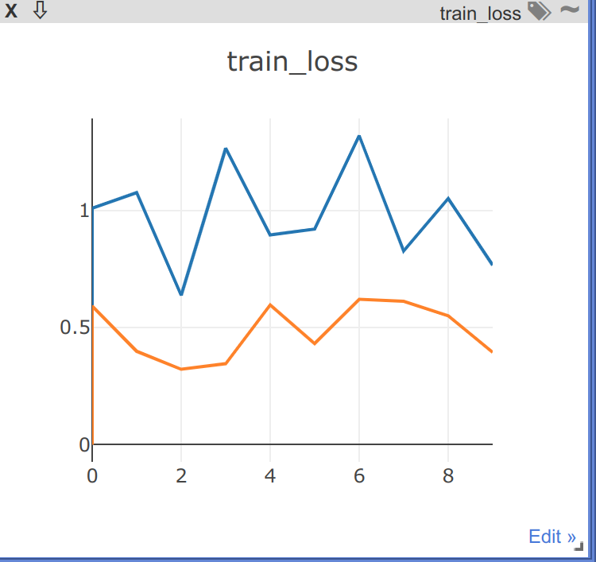
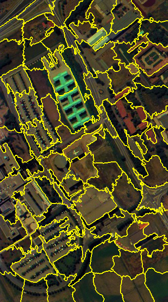

本文最后更新于：2023年5月30日 下午
一、module 二、train 1. argparse包 2. configparser包 configparser是用来读取配置文件（.ini）的包
configParser常用方法 :
返回配置文件中节序列config.sections()
返回某个项目中的所有键的序列config.optins(section)
返回section节中，option的键值config.get(section, option)
添加一个配置文件节点(str)config.add_section(str)
设置section节点中，键名为option的值(val)config.set(section,option,val)
写入配置文件config.write(obj_file)
1 2 3 4 5 6 7 8 9 10 11 12 13 14 15 16 17 18 19 20 21 22 23 24 25 26 27 28 29 30 31 32 33 34 35 36 37 38 39 40 import configparser'./dataInfo.ini' )""" dataInfo.init的内容如下： [PaviaU] # 序列名 data_key = paviaU # option = 值 gt_key = paviaU_gt band_begin = 430 band_end = 860 band = 103 h = 610 w = 340 nc = 9 [Salinas] data_key = salinas_corrected gt_key = salinas_gt band_begin = 200 band_end = 2400 band = 204 h = 512 w = 217 nc = 16 """ """输出为 ['PaviaU', 'Salinas' """ 'PaviaU' , 'band' )"""输出为 '103' """
3. visdom包监听多个数据 1 2 3 4 5 6 7 8 9 10 11 12 13 14 15 16 17 18 19 20 21 # 导入包
output:

4. sklearn.preprocessing数据预处理 4.1 Z-Score标准化（zero-mean normalization） 也叫标准差标准化。将数据按属性（按列）减去均值，后除以均方根。提高了数据可比性，同时削弱了数据解释性，是用的最多的数据的标准化方法。输出：每个属性（梅列）均值为0，方差为1，呈正态分布。
公式为：
实现
sklearn.preprocessing.scalesklearn.preprocessing.StandardScaler
4.2 最小最大值标准化(minmax_scale) 公式：将数据缩放到一定范围
对于方差非常小的属性可以增强其稳定性。有时数据集的标准差非常非常小，有时数据中有很多很多零（稀疏数据）需要保存住０元素。
维持稀疏矩阵中为0的条目
缺点：
当数据出现新的最大最小值时，需要重来一遍。
若数值集中且某个数值很大，则规范化后各值接近于0，并且将会相差不大。（如：100、102、108、20001）
实现：
sklearn.preprocessing.minmax_scalesklearn.preprocessing.MinMaxScaler
5. os.path 5.1 os.path.join 用来路径拼接文件路径，可以传入多个路径，路径之间会自动添加‘/’
1 2 3 4 import os'./data' 'rgb' , 'a' )
输出:
5.2 os.path.exists() 判断括号里的文件或者文件路径是否存在
1 2 3 4 impor os'a.py' )
Python Imaging Library(PIL)支持常见的图像格式，常用于操作二维像素点、线、文字，以及对现有图片进行缩放、变形、通道处理，可以实现创建缩略图、转换文件格式、打印图像、转换图片编码格式、比较图片差异等操作。
6.1 PIL的Image模块 用途：
提供一个与模块同名的类。用来表示一个PIL图像。这个模块同时提供一些工厂函数，包括从文件读取图像的函数及创建新图像的函数
Image 方法读取、显示图像
1 2 3 4 5 6 from PIL import Imageopen ('data/rgb/PaviaU_rgb.jpg' )print (im.width)print (im.height)print (im.mode)
输出：
Image方法将图像与ndarray数组相互转换
1 2 3 4 5 6 7 8 from PIL import Imageopen ('data/rgb/PaviaU_rgb.jpg' )print (im)print (img)print (img.shape)
output:
1 2 3 4 5 6 7 8 9 10 11 12 13 14 <PIL.JpegImagePlugin.JpegImageFile image mode=RGB size=340x610 at 0x7F3B06C6EBE0>
可以看出使用Image.open()读取图像后的格式为PIL的专属格式，np.array()以后转换为像素值数组
7. math方法
math.round(a, b)对a保留b位小数
math.ceil()向上取整
math.floor()向下取整
8. skimage.segementation.slic超像素分割 skimage作为图像处理库，包括多种图像分割算法。其中超像素slic目前表现较好.
slic(img_array, n_segements, compactness)
参数：
img_array : 2D, 3D or 4D ndarray
n_segement : 分割输出图像中标签的（近似）数量。
compactness : 平衡颜色接近度和空间接近度。值越大相邻边的权重就越大。
1 2 3 4 5 6 7 8 9 10 11 12 13 14 15 16 17 from skimage.segmentation import slic, mark_boundariesfrom PIL import Imageimport numpy as npopen ('data/rgb/PaviaU_rgb.jpg' )100 , compactness=20 )print (seg.shape)255
output:
1 2 3 (610, 340)"path" height=" " width=" " align=left />

三、utils 1. cv2 1.1 cv2不提示相关函数问题 解决方案：
1 pip install opencv-contrib-python==4.5.5.64
适用于:python3.7 python3.8 python3.9解释器
1.2 cv2.dilate() cv2.dilate()膨胀：将前景物体变大，理解成将图像断开裂缝变小（在图片上画上黑色印记，印记越来越小）
2. np.nonzero(a) 返回数组a中非0元素的索引(两个数组)，如果该数组为bool数组，则返回True的索引。
1 2 3 4 5 a = [[0 , 0 , 1 ],1 , 0 , 0 ],0 , 1 , 0 ]
output:
1 (array([0, 1, 2]), array([2, 0, 1]))
第一个数组为行对应的非0元素索引，第二个数组为列对应的非0元素索引。即：
(0, 2), (1, 0), (2, 1), 那如何像这样输出索引呢？用zip(*)
zip() 函数用于将可迭代的对象作为参数，将对象中对应的元素打包成一个个元组
1 2 3 4 5 6 a = [[0 , 0 , 1 ],1 , 0 , 0 ],0 , 1 , 0 ]list (zip (*np.nonzero(a)))
output:
1 [(0, 2), (1, 0), (2, 1)]
3. np.unique(a) 由小到大返回a中无重复的数
1 2 3 a = np.unique(seg)print (a)type (a)
output:
1 2 [ 1 2 3 ... 2013 2014 2015]
4. np.full() np.full(shape, fill_value, dtype)
Return a new array of given shape and type, filled with fill_value
返回一个给定形状和类型的新数组，数组里面的值为fill_value
1 2 a = np.full(shape=(5 ,5 ),fill_value=-1 ,dtype=np.int32)
1 2 3 4 5 [[-1 -1 -1 -1 -1]
四、TrainTestSpilt 1. a.ravel() 将数组a展平到一维(一行一行来)
1 2 3 4 a = np.random.randn(3 , 3 )print (a)print (a.ravel().shape)
output:
1 2 3 4 5 6 7 [[ 0.68311515 0.61541106 0.29958465]
2. np.zeros_like(a) Return an array of zeros with the same shape and type as a given array.
返回形状为a.shape的全0数组
3. random.sample(sequences, K) 从序列sequenxes中随机获取指定长度K的片断。sample函数不会修改原有序列。 如果k大于sequence元素个数的话会报错。
五、Trainer 5.1 tqdm Tqdm 是 Python 进度条库，可以在 Python 长循环中添加一个进度提示信息。用户只需要封装任意的迭代器，是一个快速、扩展性强的进度条工具库。
format是Python中用于格式化字符串的方法。它可以将变量或常量插入到字符串中，并按照指定的格式进行输出。使用format方法可以使代码更加简洁和易读。
1 2 3 4 5 6 7 8 9 name = 'xiaoming' 18.366666 print ('My name is {}, I am {} years old' .format (name, age))print ('My name is {0}, I am {1:.2f} years old, {0} is a good boy.' .format (name, age))3.1415926 print ('保留两位小数：{:.2f}' .format (num))
output:
1 2 3 My name is xiaoming, I am 18.366666 years old
5.3 tensor在CPU、GPU、numpy之间相互转换 1 2 # 指定GPU
CPU tensor convert to GPU tensor
GPU tensor convert to CPU tensor
numpy to CPU tensor
CPU tensor to numpy
GPU张量不能直接转换为numpy数组，必须先转到CPU